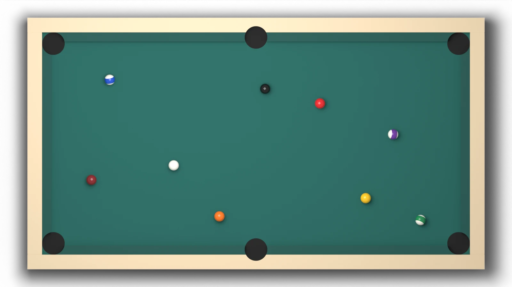
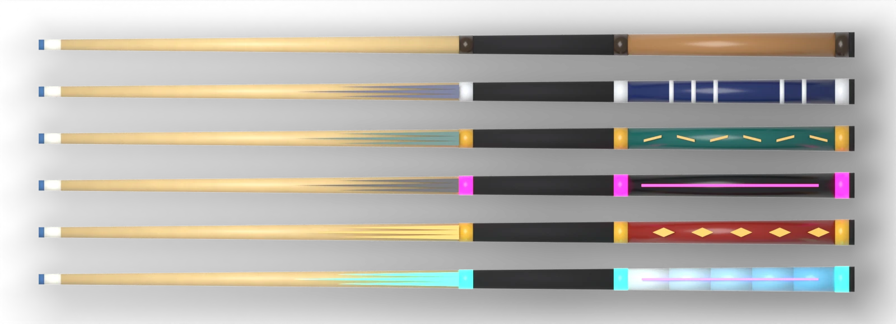
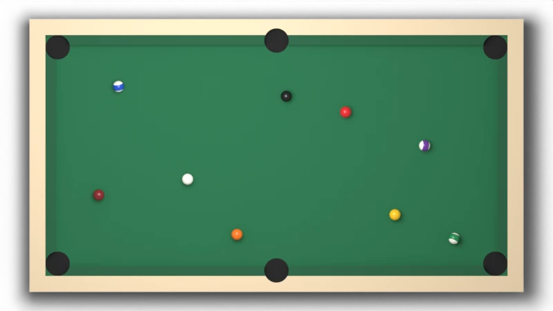
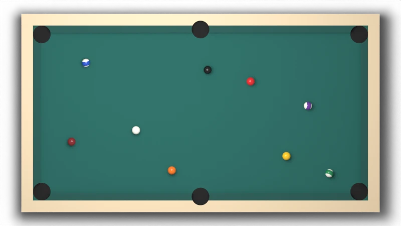
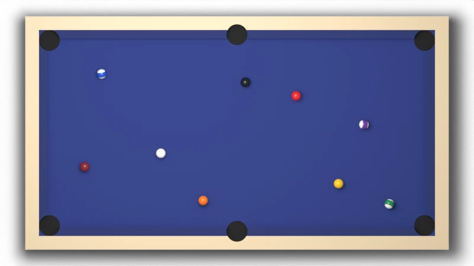
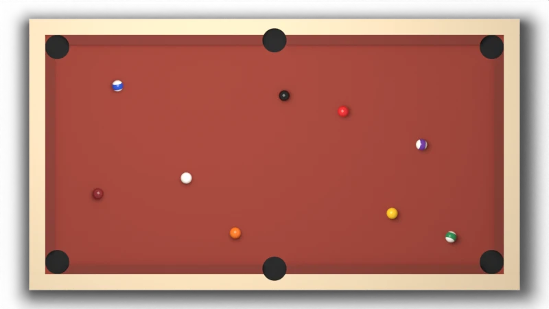
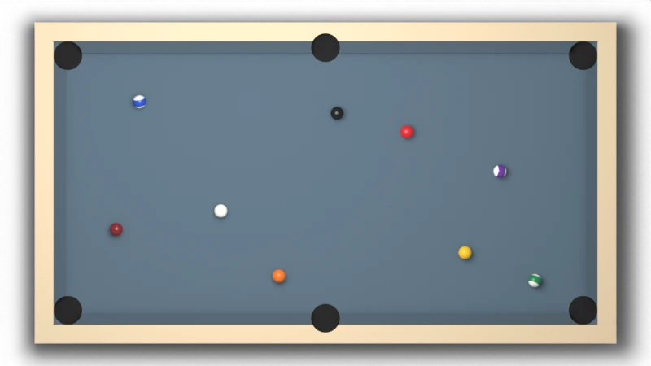
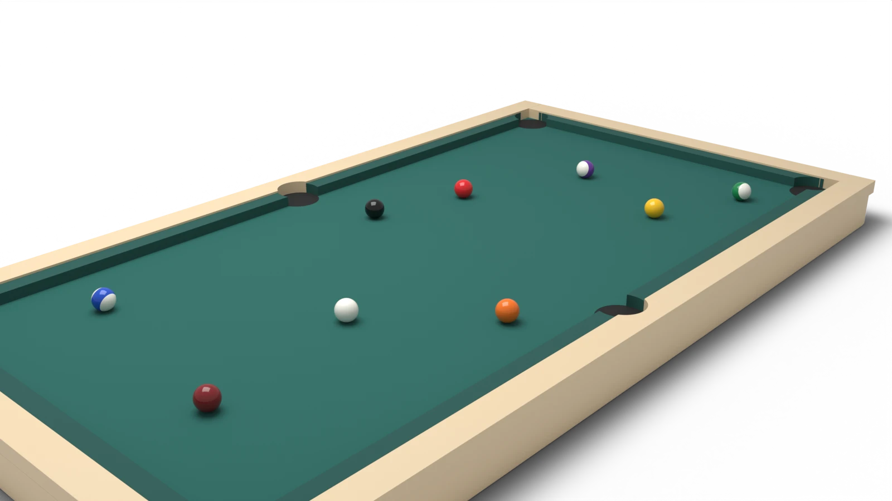

Design, before any code
Eight-ball against the computer, seen from straight above. You climb from city to city, each with its own cloth and room, and win stronger cues on the way. Nothing is built yet. This page is for you to change.
Changed after your answers. The feel of the shot now has its own section. Cues have real powers and are won, not bought. The game is a ladder of five cities, each with its own cloth and background, and you can keep any city you have won as your theme. The computer comes first; the view is straight from above. You were not sure about aiming help, so I tied it to the cue: a better cue shows a longer guide.
I have not played Pool Live Tour. This is my own design for that kind of game, and it uses none of that game's name, art or screens.
The main screen
The table picture is a Blender render. The white lines, the cue and the controls are drawn on top by the page, the way the real game would draw them.

One shot
Drag anywhere on the table to turn the cue. A white line shows where the cue ball goes, a ring shows where it will touch, and two short lines show where both balls head after the hit.
Pull the cue back. The further you pull, the harder the shot. Let go to shoot. Pull back to zero to cancel.
Tap the small cue ball to choose where the tip strikes: high to follow, low to draw back, left or right for side spin. The guide lines update as you move it.
How much of the guide you see depends on your cue. The plain house cue shows a short line. The best cue shows the whole path into the pocket.
The feel of the shot
You said this is what you loved most. So it gets built and tuned first, on one bare table, before cities or cues exist.
The cue follows your finger with no lag. It draws back smoothly, and the power bar and the cue move as one.
A sharp click whose loudness matches the power. A hard break sounds and looks different from a soft tap. On a phone, a short buzz.
Balls have weight. They slide first, then roll, and slow down the way real ones do. Spin visibly bends what happens after a hit.
A ball rattles in the pocket jaws before it falls. The last ball of a match goes in at half speed.
Cues
A cue changes what you are able to do. It never changes the laws of the table. Power raises your top speed. Spin lets the tip strike further from the centre. Guide makes the aiming line longer. Each cue after the first also has one power of its own.

| Cue | Won in | Power | Spin | Guide | Its own power |
|---|---|---|---|---|---|
| House | You start with it | ●●●●● | ●●●●● | ●●●●● | None |
| Lakeshore | Chicago | ●●●●● | ●●●●● | ●●●●● | Shows where the struck ball heads |
| Monsoon | Mumbai | ●●●●● | ●●●●● | ●●●●● | Shows where the cue ball goes after the hit, spin included |
| Neon | Tokyo | ●●●●● | ●●●●● | ●●●●● | The guide follows one bounce off a cushion |
| Atlas | Marrakech | ●●●●● | ●●●●● | ●●●●● | The break shot hits a fifth harder |
| Aurora | Reykjavik | ●●●●● | ●●●●● | ●●●●● | Shows the whole path of the struck ball, into the pocket |
Cues are won by beating a city. There are no coins and no shop. The computer's players carry cues too, so a late city is hard for two reasons: a better player with a better cue.
Cities
Each city has three tables. Win all three to take its cue and open the next city. Once you have won a city, its cloth and its room are yours: you can pick them as your theme for any later match.

Classic green cloth. A lakefront room at dusk, in slate blue. The opponent misses often.

Sea green cloth. A monsoon evening in warm grey. The opponent starts to play position.

Indigo cloth. A neon night, near black with a magenta glow. The opponent rarely misses an easy ball.

Brick red cloth. A tiled courtyard in sand. The opponent uses spin and plans two shots ahead.

Slate blue cloth. Northern lights over deep navy. The opponent plays close to perfect pool.
The cities and their looks are my picks. Swap in any places that mean something to you. An opponent's level is one number underneath: how much error is added to its aim and power.
The other screens
The five cities in a row, with your progress in each. Pick a table, pick a cue, pick a theme, play. No sign-up, no coins, no shop.
The screen above. Break, take turns, call the pocket for the eight ball. A foul gives the other player the cue ball in hand.
Who won, how many shots each side made, your longest run, and one shot of yours replayed with the line the computer would have chosen.
The look
The page around the table uses your Apple News look: a warm off-white ground, white cards, a serif for headings. The table is the only strong colour on the screen, so your eye stays on it.

Under the table
Two parts of this game are real science problems. Both can be predicted first and measured after.
Written in C++ and run in the browser, as your matching engine is. Balls slide, then roll. Spin changes the path after a hit. Cushions take away speed. Each of these has a formula, so the engine can be checked against it.
It does not follow a script. It tries many shots inside the physics engine, scores where the balls would end up, and picks the best. Its level is set by how much error is added to its aim and power.
| What to check | Prediction from physics | How it is measured |
|---|---|---|
| Cut angle | The struck ball leaves along the line between the two centres | Fire 1,000 shots at set angles and compare the angle each ball leaves at |
| Stop shot | A straight shot with no spin left on the cue ball stops it dead | Distance the cue ball travels after the hit |
| Rolling distance | A rolling ball travels its speed squared, divided by twice the cloth's drag | Roll balls at set speeds and measure where they stop |
| Energy | Never rises during a shot | Total energy of all balls at every step of every test shot |
| Computer's pot rate | Falls smoothly as aim error rises | Play it against itself 1,000 games at each level |
Scope
Each step is playable on its own. I would show you step 1 and wait for your word before starting step 2. Progress is saved in your browser, so there is no server and no account.
Before I build